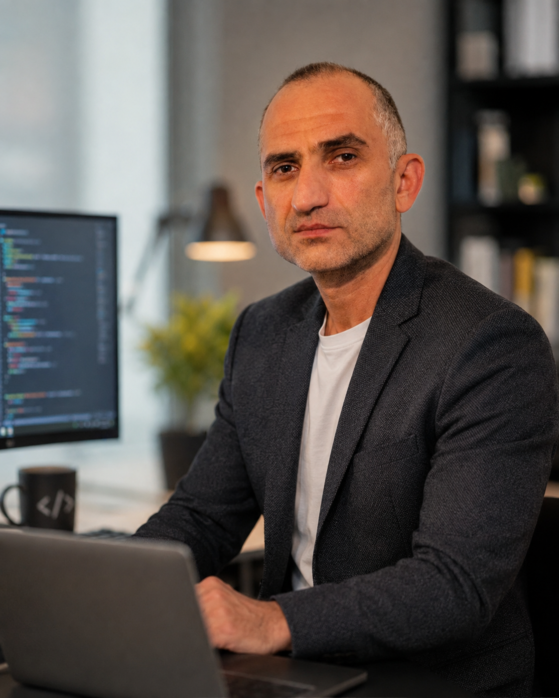

Engineering
Energietechnik, technische Systeme und analytisches Denken.
Softwareentwicklung · Kassel
Technisch orientierter Softwareentwickler mit praktischer Projekterfahrung. Ich entwickle Webanwendungen, Dashboards, Automatisierungen und datenbasierte Systeme mit Python, JavaScript und APIs.
Offen für passende technische Rollen, Softwareprojekte und Zusammenarbeit.

01 · Profil
Mein beruflicher Weg verbindet Energietechnik, langjährige praktische Arbeit, Organisation und Kundenkontakt mit moderner Softwareentwicklung.
Ich habe Energietechnik studiert und arbeite seit vielen Jahren mit technischen Systemen, Computern, Daten und strukturierten Abläufen. Heute setze ich diese Erfahrung in eigenen Web- und Softwareprojekten ein.
Mein Fokus liegt nicht auf Demo-Code, sondern auf Lösungen, die nachvollziehbar aufgebaut sind, getestet werden können und einen konkreten Ablauf verbessern.
Vollständigen Lebenslauf ansehen ↗Energietechnik, technische Systeme und analytisches Denken.
Prozesse, Organisation, Kundenkontakt und reale Arbeitsabläufe.
Webanwendungen, Datenlogik, Automatisierung, APIs und eigene Systeme.
02 · Arbeitsbereiche
Von der klaren Webpräsenz bis zum datenbasierten Werkzeug.
Responsive Webseiten, Informationsportale und Webprodukte mit klarer Nutzerführung.
Oberflächen für Kennzahlen, Datensätze, Kunden, Zahlungen und administrative Abläufe.
Python-Werkzeuge, Datenpipelines, Schnittstellen, Prüfungen und wiederholbare Prozesse.
03 · Schwerpunktprojekte
Jeder Projektstatus beschreibt transparent, wie weit die Anwendung entwickelt ist. Code, Live-Demos und technische Entscheidungen bleiben nachvollziehbar.
 FEATURED SYSTEM · 01
FEATURED SYSTEM · 01
Analysiert Bitcoin-Marktdaten, bündelt Indikatoren zu nachvollziehbaren Bewertungen und simuliert Positionen mit klarer Entry-, Stop-Loss- und Take-Profit-Logik.


04 · Weitere Arbeit
05 · Kontakt
Ich interessiere mich für passende Rollen und Zusammenarbeit rund um Softwareentwicklung, interne Tools, Automatisierung und datenbasierte Anwendungen.